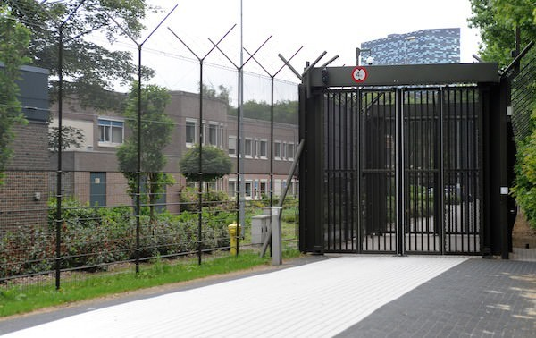

Fusing AI & Healthcare in a single day,
full of talks and discussions
ACAIS 2015 takes place on the 20th of May in Nijmegen,
from 9:00 till 17:00 with an optional dinner till 21:00.
{% if site.hide_feature_overview == false %}
Keynotes
ACAIS 2015 will consist of two keynotes, each highlighting a topic within AI in Health.
View keynotesTwo seperate tracks
Besides the keynotes you will have enough options to customise your programme! We will organise two seperate tracks spread out over multiple topics.
View invited talksUnique Location
We are guests at the Pompe Foundation which is a specialized Forensic Psychiatric Center. The Pompe Foundation offers forensic psychiatric care for TBS-patients in the clinic in Nijmegen.
View venueKeynotes

Invited talks
Currently confirmed programme below. See the Timetable for the full programme!
Pim Haselager
Donders Institute for Brain, Cognition and Behaviour
| Time | Track 1 | Track 2 |
|---|---|---|
| 9:00 | Registration & coffee/tea | |
| 10:00 | Opening | |
| 10:30 |
Computer Aided Diagnosis
Nico Karssemeijer |
|
| 11:15 | Coffee/Tea break | |
| 11:30 |
Helping Parkinson Patients with Google Glass
Richard van Wezel |
Privacy & Security
Bart van den Bogaard, Topicus |
| 12:15 |
Talk provided by
the Pompe Clinic |
Intelligence In Human Interactions
Albert Vlug |
| 13:00 | Lunch | |
| 13:45 |
BCI
Rainer Goebel |
Neurofeedback Games
Isabela Granic |
| 14:30 |
Navigating Flexible Endoscopes
Nanda van der Stap |
Virtual Reality Therapy
Willem-Paul Brinkman |
| 15:10 | Coffee/Tea break | |
| 15:30 |
The future of (Parkinson) care
Bas Bloem |
|
| 16:15 |
Discussion
Pim Haselager |
|
| 17:00 | Drinks | |
| 18:00-21:00 | Optional dinner | |
{% endif %} {% if site.hide_venue == false %}
This year's location:
Forensic Psychiatric Center,
The Pompe Foundation

We are guests at the Pompe Foundation which is a specialized Forensic Psychiatric Center. The Pompe Foundation offers forensic psychiatric care for TBS-patients in the clinic in Nijmegen.
Apart from visiting ACAIS 2015, you will have the unique opportunity to visit this clinic; one that is generally not accessible to the public.
Please note: The Pompe clinic is a closed facility with security comparable to a prison. This means that we are bound to their security rules. Please keep the following in mind:
No cameras, mobile phones or other electronic devices are allowed inside the clinic. It is forbidden to take pictures of the facilities. Mobile phones can be handed in during registration and will be returned when leaving. We kindly ask you to leave these devices at home if possible.
Need to be available during the day? We will have special emergency telephone numbers that are reachable the whole day.
It is not allowed to smoke within the facility. Only during breaks, attendees are allowed to smoke at places designated by the clinic's staff.
At all times, attendees must follow instructions issued by the organizing committee and the clinic's staff.
All attendees must pass security (including metal detectors), comparable to an airport, before entering the facility. Rest assured, you will receive all necessary information after your registration.
{% endif %}
Order tickets
Tickets are sold through Eventbrite and can be payed using iDeal or creditcard. Registration closses May 17th 11:59 PM.
Sponsors


Who are we?
ACAIS is an annual symposium organised by a team of students, all studying Artificial Intelligence at the Radboud University. ACAIS and the committee are part of study association CognAC. Our philosophy: for and by students; organising an event that stimulates new insights and the exchange of information.
ACAIS is non-profit and is fully funded by ticket fees, subsidies and sponsorships. See below for everyone who contributed to eight years of ACAIS history.
See our previous editions for more information.
ACAIS 2015: AI in Health
- Margo van der Stam (Chairman)
- Zina Al-jibouri (Secretary)
- Jesse Zwamborn (Treasurer)
- Wouter Bulten
- Leonieke van den Bulk
- Marije de Witte
- Lino Vliex
- Robbert Hendriks
- Maarten Vos
- Bas Vogelzang
- Thijs Nieuwdorp
- Renate Bresser
- Linde Kuijpers
ACAIS 2014: Robotics
- Wouter Bulten (Chairman)
- Margo van der Stam (Vice-Chairman)
- Harmen Prins (Secretary)
- Leonieke van den Bulk (Vice-Secretary)
- Marije de Witte (Treasurer)
- Lino Vliex (Vice-Treasurer)
- Robert-Jan Drenth
- Robbert Hendriks
- Lotus ter Haar
- Sanna Dinh
- Jesse Zwamborn
- Maarten Vos
ACAIS 2013: Life
- Wouter Bulten (Chairman)
- Frank Dorssers (Secretary)
- Marije de Witte (Treasurer)
- Margo van der Stam
- Robert-Jan Drenth
- Jelte van Waterschoot
- Denise Slotman
- Robbert Hendriks
ACAIS 2012: The Web
- Wouter Bulten (Chairman)
- Frank Dorssers (Secretary)
- Marije de Witte (Treasurer)
- Jelte van Waterschoot
- Jasper van der Waa
- Jules Kruijswijk
- Senna van Iersel
- Denise Slotman
ACAIS 2011: Future Helpers
- Wouter Bulten (Chairman)
- Laurie Bax (Secretary)
- Marije de Witte (Treasurer)
- Jelte van Waterschoot
ACAIS 2010: AI Everywhere
- Bart van Delft (Chairman)
- Jelmer Wolterink (Treasurer)
- Wouter Bulten
- Andrea Loing
ACAIS 2009: AI & Traffic
- Bart van Delft (Chairman)
- Jelmer Wolterink (Treasurer)
ACAIS 2008: AI & Creativity
- Bart van Delft (Chairman)
- Marlieke van Kesteren
- Jelmer Wolterink
- Iris van Rooij